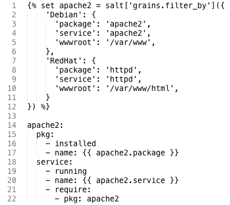
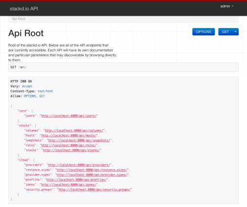

A cloud deployment, automation, and orchestration platform for everyone
Built on a tool that we trust, Salt, you can write your provisioning rules in an easy to understand markdown format that defines what you want installed, the state each component should be in, what files you want managed, and then define the order in which you want each component installed.
You can even use conditional logic to target specific platforms.
Most cloud infrastructure tools are built to manage and solve one particular architecture for one particular team.
stackd.io is designed from the ground up to allow each individual team member to manage their own personal infrastructure from a single, shared application. Each asset you define is controlled by you, which eliminates the risk of accidental, or deliberate launching/termination of resources used by someone else.
Using another tool that we trust, the Django REST Framework, there is an underlying REST API that you can use to integrate provisioning, launching, and orchestration into any of your projects that require cloud instrastructure assets.
